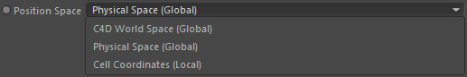

Node
Navié Scene

Drop here the Effex scene which defines the physical space (by its voxel size and unit conversion settings).
Position Space

Select in which space the input 'Position' vector is defined in.
Global
Defines if the input 'Position' vector is in global (activated) or local coordinates of the defined 'Position space'.